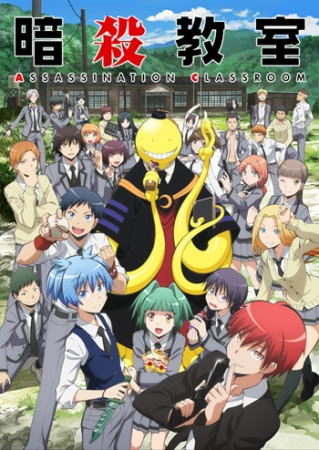
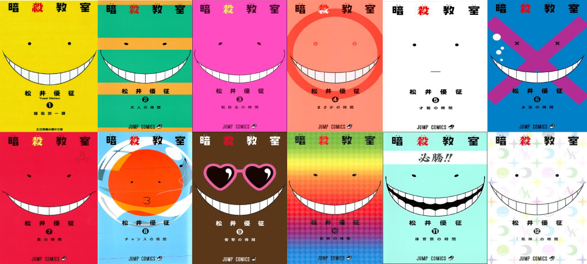
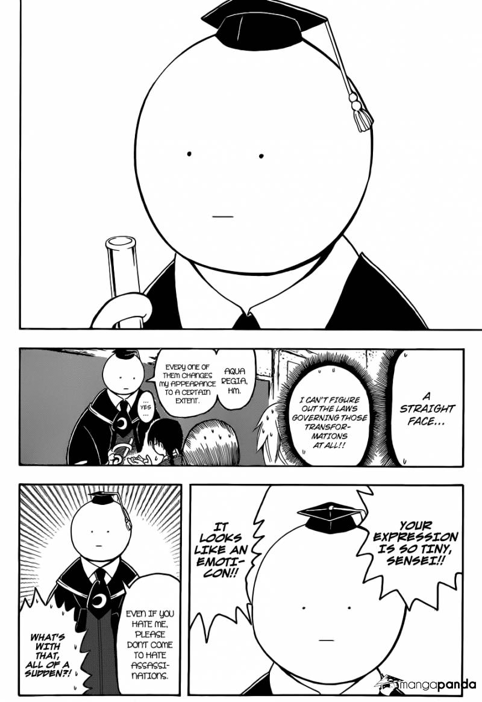

Back to home
The adapted anime series Assassination Classroom premiered January 9, 2015. The series is produced by Lerche and directed by Seiji Kishi. The anime is broadcasted by Fuji Television in Japan and Funimation has also received the rights for release in North America. Assassination Classroom can be watched free on websites like Funimation, Crunchyroll, etc.
The first season had 22 episodes, with each one around 20 minutes long. It ended with Nagisa beating Takaoka and saving the virus infected students. The students make the most of the remainder of their vacation before returning to school for the second term of their assassination classroom. The last episode was released on June 19, 2015.
A second season called ”Assassination Classroom: Second Season” began January 7, 2016 and like the first season is produced by Lerche. There were 25 episodes. It ended with the death of Korosensei, and the students getting together 7 years later to tidy up the campus building and discuss what everyone has been up to over the years, with Nagisa working as a trainee teacher at a delinquent high school, using the skills he had learned from Korosensei to set his class straight.
A live action film adaptation was released on March 21, 2015. A sequel, “Assassination Classroom: Graduation” was released on March 25, 2016.
The series began serialisation in Shueisha’s Weekly Shonen Jump magazine on July 2, 2012. The first collected volume was published on November 2, 2012. There were over 400,000 prints for the first volume. The series has been licensed in English by Viz Media, who began releasing the series in physical and digital editions from December 2014.
Each manga has a unique cover page, primarily based on Korosensei’s ever changing face. They are all in black and white.
 The series ended on March 16, 2016, with 180 chapters.